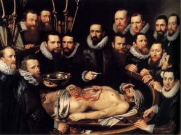
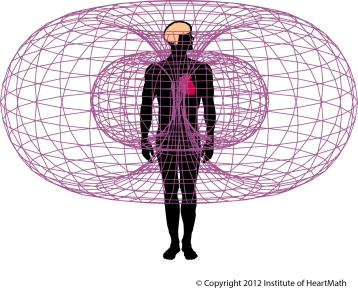

“Dat is interessant. Ik stel voor dat we
het 'liefdespomp' noemen.”
“Ik denk dat dat misleidend zou kunnen zijn.”
“OK, dan noemen we het 'hart'.”
Al in de vijfde week nadat een eicel is bevrucht
begint een klein hartje in het embryo te kloppen. De week erna
slaat het kleine hartje regelmatig, wel 150 keer per minuut. In de
negende week is het hart volledig gevormd en pompt bloed rond door
het kleine lichaampje dat dan plm. 3 centimeter 'groot' is.
Het hart is het allereerste orgaan
dat volledig werkt in een menselijk embryo, en dus in de
mens.
Het hart heeft haar eigen elektrische impuls en
kan daarom (bij voldoende zuurstof) blijven kloppen/pompen, zelfs
na ontkoppeling van de rest van het lichaam. De bron van de
hartslag is het hart zelf, en niet de hersenen: het hart klopt
zelfstandig.
Hart als Orgaan: op de hoornvliezen na krijgt elk van de plm. 75
triljard cellen in het lichaam bloed toegevoerd... door het
hart.
Hart als Spier: de meest krachtige spier in het lichaam en
verricht van alle spieren die een mens heeft verreweg het meeste
fysieke werk gedurende een mensenleven: continu output 1-5
Watt.
Hart als Klier: in 1983 is ontdekt dat het hart een hormoon
produceert en afgeeft (atrial natriuretic factor - ANF). Kort
geleden is ontdekt dat het hart ook oxytocine afscheidt, een
hormoon dat welbekend is voor haar rol bij bevalling en (productie
van) moedermelk en naar recent wetenschappelijk bewijs ook
betrokken is in cognitie, tolerantie, aanpassing, complex seksueel-
en moedergedrag en in het leren van sociale triggers en het bepalen
van langdurige relaties tussen twee mensen. Opvallend is dat
concentraties van oxytocine in het hart net zo hoog (kunnen) zijn
als concentraties die in hersenen worden
gevonden.
Hart als Brein: sinds pionier in Neurocardiologie Dr. J. Andrew
Armour in 1991 het bestaan van het 'hartbrein' onthulde weten we
steeds meer over het eigen complexe intrinsieke zenuwstelsel dat
als netwerk van verschillende typen neuronen, neurotransmitters,
proteïnen en ondersteunende cellen zoals ook in de hersenen
voorkomen als 'hartbrein' gekwalificeerd wordt. Dankzij onder
andere het wetenschappelijk onderzoek en baanbrekend werk van het
HeartMath Institute beginnen we steeds meer te weten te komen over
het hart, in het bijzonder over de interacties tussen de hersenen
en het hart, dat geen eenrichtingsverkeer blijkt te zijn en vooral
uit communicatie van het hart naar de hersenen blijkt te bestaan in plaats van
andersom.
Recent onderzoek wijst uit: het hart bezit
intuïtieve intelligentie, kan emoties ervaren, heeft geheugen,
en (ook) volgens Dr. Catherine Athans (auteur van "The Heart
Brain") is het hart de plek voor wijsheid. Het hart 'vertelt' het
brein wat te doen, en hoe dat te doen,
gebalanceerd.
Wetenschappelijke onderzoeken tonen al veel
langer aan dat het hart de krachtigste generator van elektrische en
magnetische velden is. Ondanks dat blijven de hersenen als primair
energiepotentieel gezien worden. En alhoewel het brein zeker haar
eigen elektromagnetisch veld heeft is dat onvergelijkbaar met de
kracht van het veld van het hart: het hart heeft zowel een
elektrisch als een magnetisch veld die vele keren sterker zijn dan
die van de hersenen. Zeer belangrijk omdat de fysieke wereld -
zoals wij die kennen - is gemaakt van die 2 gebieden: elektrische
en magnetische energievelden.

Conclusie: Het ligt nu vast dat het menselijk
hart de sterkste generator van zowel elektrische als magnetische
velden in het lichaam is. Belangrijk, want we hebben geleerd dat
het in de hersenen is waar alle actie gebeurt. Terwijl het brein
een elektrisch en een magnetisch veld heeft die beiden relatief
zwak zijn in vergelijking met het hart.
De natuurkunde vertelt ons dat als we ofwel het
magnetisch veld of het elektrische veld van het atoom veranderen,
we letterlijk dat atoom veranderen en de elementen ervan in ons
lichaam en in deze wereld. Het menselijk hart is ontworpen om beide
te doen. David Math noemt het hart ''de harmoniseerder van je
lichaam".
Mijn conclusie is dat het hart de schakel
is tussen het lichaam van de mens en de geest van de mens. Ik denk
dat het brein alleen aan de lichamelijke kant behoort, dat er een
menselijke geest is waarover ik niets inhoudelijks kan schrijven,
en dat het hart de verbindende schakel tussen die twee
essentiële kanten van de dualistische mens is. En dat in het
bereiken van de balans tussen lichaam en geest het hart essentieel
is.